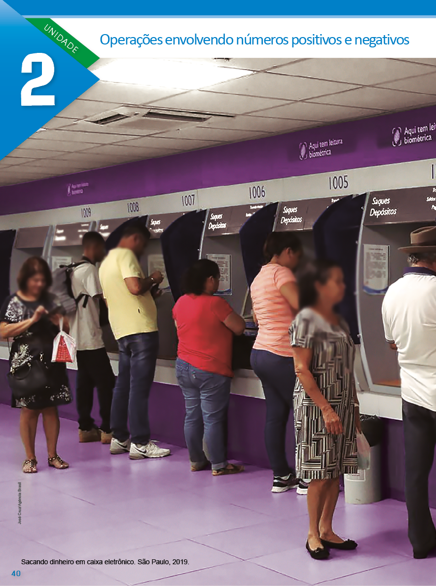
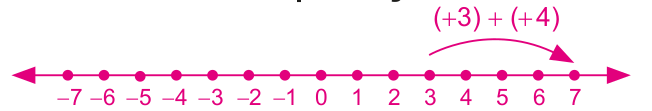
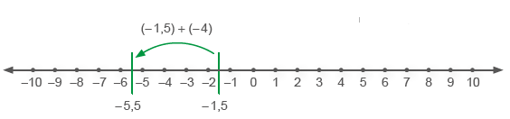
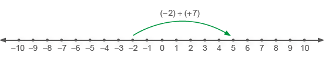
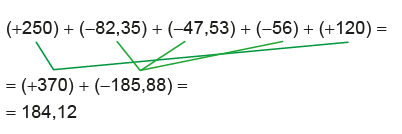
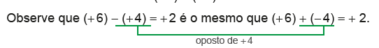
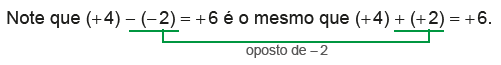
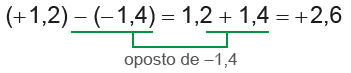
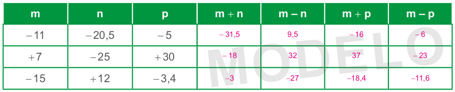
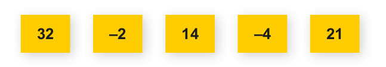

Introdução à unidade
Nesta unidade, são exploradas as operações envolvendo os números positivos e negativos. Você pode propor à turma situações-problema, dividindo os alunos em grupos e solicitando que tentem resolvê-las. Depois, solicite que apresentem aos colegas as soluções encontradas. Algumas das explanações poderão estar corretas e outras não. Porém, o saber resultante da troca de ideias contribui para a construção dos conceitos envolvendo as operações de números racionais. As situações-problema utilizadas podem ser as apresentadas no livro ou outras relacionadas ao cotidiano. Após esse trabalho, pode-se iniciar a formalização dos conceitos necessários para que os alunos possam realizar as operações.
A seguir, relacionamos os objetivos que se pretende atingir ao estudar os conceitos desta unidade.
Capítulo 1 − Adição e subtração envolvendo números positivos e negativos
Objetivos:
► Realizar a adição e subtração de números racionais.
► Resolver expressões numéricas envolvendo adição e subtração de números racionais.
► Resolver situações-problema envolvendo adição e subtração de números racionais.
40
EF07MA01
UNIDADE 2 - Operações envolvendo números positivos e negativos
Capítulo 2 − Multiplicação e divisão envolvendo números positivos e negativos
Objetivos:
► Realizar a multiplicação e divisão de números racionais.
► Resolver expressões numéricas envolvendo adição, subtração, multiplica e divisão de números racionais.
► Resolver situações-problema envolvendo adição, subtração, multiplicação e divisão de números racionais.
Capítulo 3 − Potenciação e raiz quadrada
Objetivos:
► Calcular a potência e a raiz quadrada de números racionais.
► Resolver expressões numéricas envolvendo adição, subtração, multiplicação, divisão, potenciação e raiz quadrada de números racionais.
► Resolver situações-problema envolvendo as operações estudadas.
Probabilidade e estatística − Médias
Objetivos:
► Compreender, calcular e interpretar a média aritmética e a média ponderada.
► Resolver situações-problema envolvendo média aritmética e média ponderada.
41
EF07MA01
É comum as pessoas retirarem um extrato bancário para fazer o acompanhamento das transações financeiras de suas contas bancárias
A seguir, temos um exemplo de um extrato bancário que mostra as transações financeiras que ocorreram em um determinado período.
![Extrato bancário de transações financeiras em um papel cor de creme. No canto superior esquerdo: Extrato. Período: 02/02/2022 a 15/02/2022. Data/Hora: 15/02/2022 às 14:35h. O extrato está dividido em oito linhas. Linha 1: Data. Histórico. Valores. Saldo R$. Linha 2: 02/02/2022. Saldo Anterior. Espaço em branco. 256,30. Linha 3: 07/02/2022. TED diferente Titularidade. 1.575,00. 1.831,30. Linha 4: 10/02/2022. Débito contribuição Previdência. Em vermelho menos 72,80. 1.758,50. Linha 5: 10/02/2022 Débito Imobiliária. Em vermelho menos 850,00. 908,50. Linha 6: 12/02/2022. Débito Supermercado. Em vermelho menos 389,33. 519,17. Linha 7: 12/02/2022. Tarifa mensalidade Pacote de janeiro/2022. Em vermelho menos 6,50. 512,67. Linha 8: 15/02/2022. Débito Concessionária. Em vermelho menos 748,50. Em vermelho menos 235,83.](../../resources/images/unidade2/capitulo1/imagem2.PNG)
CONVERSE
1. Observando o extrato bancário, o que representam os números em vermelho e preto na coluna de valores? Os valores em vermelho são negativos e representam um débito, ou seja, esses valores foram retirados da conta. O valor em preto é positivo e representa um crédito, ou seja, este valor foi depositado na conta bancária.
2. Como podemos encontrar os valores que estão representados na coluna saldo? Realizando uma operação de adição ou subtração entre o valor disponível na conta bancária e os créditos e débitos realizados.
3. No dia 15/02/2022, o saldo na conta bancária era positivo ou negativo? O que significa este valor? O saldo era negativo. Significa que o cliente terá que realizar um depósito neste valor para cobrir o valor que está devendo para o banco.
Orientações específicas
Na abertura da unidade é proposta uma situação-problema envolvendo uma movimentação financeira em uma conta bancária. Essas movimentações fazem parte do cotidiano das pessoas, por isso é importante que o aluno saiba como elas ocorrem.
Após a seção “Converse”, pode-se solicitar aos alunos que façam uma pesquisa e apresentem outras situações do cotidiano em que realizamos operações envolvendo números positivos e negativos.
Aproveite o tema da abertura e promova projetos que contemplem alguns temas contemporâneos, como educação para o consumo, educação financeira, educação fiscal, etc.
| Principais habilidades da BNCC | EF07MA03, EF07MA04, EF07MA05, EF07MA06, EF07MA07, EF07MA11, EF07MA12 |
| Competências | CE6, CE8, CG9 |
Iniciando o estudo da adição, são apresentadas situações-problema relacionadas às temperaturas em diversas cidades do mundo, que permitem ao aluno representar na reta numérica e ainda observar a variação em um termômetro. Durante a realização das atividades, caso ache necessário, solicite aos alunos que utilizem a reta numérica para realizar as adições.
Para subtração de números positivos e negativos, as situações-problema exploradas envolvem os resultados financeiros de empresas. Lucro e prejuízo são termos que normalmente os alunos conhecem e relacionam a ganhos e perdas de dinheiro.
42
CAPÍTULO 1 - Adição e subtração envolvendo números positivos e negativos
Adição envolvendo números positivos e negativos
Lages, SC, 2017.
Em um dia de inverno na cidade de Lages, a temperatura era de 3ºC no início da manhã. Às 11h, a temperatura havia subido 4ºC. Qual era a temperatura nesse horário?

1. Troque ideias com um colega e verifiquem por meio de qual operação podemos calcular a temperatura das 11h da manhã. Representem esta operação. Adição. (+3) + (+4) = 3 + 4 = 7. Às 11h da manhã a temperatura era de 7ºC
a) Agora, representem esta operação utilizando a reta numérica.
A situação acima foi representada por meio de uma adição.
Ao adicionarmos dois números positivos, adicionamos os seus módulos e o resultado é positivo.
Vejamos, a seguir, outras situações.
43
EF07MA06
Situação 1
Ao anoitecer, no inverno da cidade de Montreal, no Canadá, os termômetros registravam - 1,5ºC. Durante a noite, a temperatura baixou 4ºC. Qual foi a temperatura registrada durante a noite?
Podemos representar esta situação por meio de uma adição de dois números negativos:
(- 1,5) + (- 4) = - 5,5

Montreal, Canadá, 2018.
Representando na reta numérica temos:
A partir do - 1,5, andamos 4 unidades para a esquerda na reta numérica, chegando ao número que corresponde a - 5,5.
A temperatura em Montreal durante a noite foi de - 5,5ºC.
Ao adicionar parcelas de números negativos, adicionamos os seus módulos e o resultado é negativo.
Situação 2
Durante a madrugada na cidade de Edimburgo, capital da Escócia, a temperatura era de - 2ºC. Até o meio-dia, a temperatura aumentou 7ºC. Qual foi a temperatura registrada pelos termômetros nessa cidade ao meio-dia?
Podemos representar esta situação por meio de uma adição em que uma das parcelas é um número negativo e a outra um número positivo:
(- 2) + (+ 7) = +5

Edimburgo, Escócia, 2019.
Representando na reta numérica temos:
A partir de - 2 andamos 7 unidades para a direita na reta numérica, chegando ao ponto + 5.
A temperatura registrada pelos termômetros ao meio-dia foi de 5ºC.
Nas situações apresentadas, os alunos terão contato com números negativos e positivos em situações comuns do dia a dia, podendo expressar suas respostas e sintetizar conclusões por meio de diferentes registros (com e sem o uso da reta como suporte), contemplando a Competência específica de Matemática 6.
44
EF07MA01
Situação 3
O Arco do Triunfo na Avenida Champs de Elyssés. Paris, França, 2021.
Ao anoitecer, na cidade de Paris, os termômetros marcavam 2ºC. Durante a noite, a temperatura baixou 5ºC. Qual foi a temperatura registrada pelos termômetros durante a noite?
Podemos representar esta situação por meio de uma adição em que uma das parcelas é um número positivo e a outra um número negativo:
(+2) + (-5) = -3
Representando na reta numérica temos:

A partir do + 2 deslocamos 5 unidades para a esquerda na reta numérica, chegando ao ponto - 3.
A temperatura registrada pelos termômetros durante a noite foi de - 3ºC.
Quando adicionamos duas parcelas em que um número é positivo e o outro é negativo, devemos subtrair os seus módulos e o sinal do resultado será igual ao sinal do número de maior módulo.
Observe outros exemplos de adições envolvendo números negativos:
a) (+5,6) + (-7,5) = -1,9
b) (-0,5) + (-8) = -8,5
c) \(-\dfrac{1}{5} + \dfrac{1}{4} = - \dfrac{4}{20} + \dfrac{5}{20} = \dfrac{1}{20}\)
Quando adicionamos dois números que são opostos, o resultado é igual a zero. Observe:
a) (+7) + (-7) = 0
b) (-8,1) + (+8,1) = 0
c) \(\left(-\dfrac{1}{6}\right) + \left(+\dfrac{1}{6}\right) =0\)
As adições representadas nas situações anteriores podem ser escritas de uma forma mais simples. Observe:
Adição com mais de duas parcelas
Retome os conceitos de extrato bancário que foram abordados no início da unidade, registre no quadro as informações apresentadas pelos alunos e, ao final, peça a todos que registrem nos cadernos para que possam consultar sempre que necessário. Pergunte aos alunos sobre os termos que aparecem na situação apresentada, como o que significa “retirar um extrato”, “movimentos financeiros”, “saldo bancário” e “fatura”.
Aproveite o momento para abordar o tema de educação financeira, questionando aos alunos se costumam organizar as despesas e se fazem poupança.
No site Estratégia Nacional de Educação Financeira (ENEF), disponível em: https:// www.vidaedinheiro.gov.br/, você poderá acessar gratuitamente todas as publicações disponíveis para alunos e professores do Ensino Fundamental e Médio.
45
EF07MA01
(-1,5) + (-4) = -1,5 - 4 = -5,5
(-2) + (+7) = -2 + 7 = +5
(+2) + (-5) = 2 - 5 = -3
Em uma ad- ição envolvendo números positivos e negativos, a ordem das parcelas não altera a soma.
Adição com mais de duas parcelasMárcia retirou um extrato de sua conta bancária para saber os movimentos financeiros de uma determinada semana. No início da semana, seu saldo era de R$ 250,00. Dois dias depois, ela pagou a fatura da conta de luz e de telefone nos valores de R$ 82,35 e R$ 47,53, respectivamente. Após quatro dias, ela pagou a fatura de água no valor de R$ 56,00 e fez um depósito de R$ 120,00. Ao final dessa semana qual era o saldo da conta de Márcia?
Representando esta situação por meio de uma adição, temos:
(+250) + (-82,35) + (-47,53) + (-56) + (+120)
Para sabermos o saldo ao final da semana, vamos resolver a adição de 5 parcelas de duas formas diferentes:
1.° Podemos resolver as adições na ordem em que aparecem na expressão numérica.
(+250) + (-82,35) + (-47,53) + (-56) + (+120) =
= (+167,65) + (-47,53) + (-56) + (+120) =
= (+120,12) + (-56) + (+120) =
= (64,12) + (+120) =
= 184,12
2.° Podemos agrupar os valores que representam um débito (valores negativos) e os valores que representam um crédito (valores positivos) e depois realizar a adição.
Em uma adição envolvendo números positivos e negativos podemos associar as parcelas de diferentes maneiras mantendo o resultado
Encontre soluções
Atividade 3
a) (- 7) + (- 5) = - 7 - 5 = - 12
b) (+ 8) + (- 12) = 8 - 12 = - 4
c) (- 10) + (+ 5) = - 10 + 5 = - 5
d) (+ 15) + (- 9) = 15 - 9 = 6
e) (- 22) + (- 17) = - 22 - 17 = - 39
f) (-157) + (+157) = -157 + 157 = 0
g) (- 43) + (+ 25) = - 43 + 25 = -18
h) (+ 28) + (- 30) = 28 - 30 = - 2
i) (+ 19) + (- 81) = 19 - 81 = - 62
j) (- 9) + (+ 63) = - 9 + 63 = +54
k) (- 270) + (+ 438) = - 270 + 438 = + 168
l) (+ 45) + (+ 76) = 45 + 76 = + 121
46
EF07MA01
ENCONTRE SOLUÇÕES
1. Um mergulhador estava a 4,5 m abaixo do nível do mar e resolveu descer mais 2 m de profundidade para observar alguns animais marinhos. Quantos metros o mergulhador atingiu em relação ao nível do mar? Em seu caderno, represente essa situação por meio de uma adição e depois a resolva. (− 4,5) + (− 2) = − 4,5 − 2 = − 6,5. O mergulhador atingiu 6,5 metros de profundidade em relação ao nível do mar.
2. Um elevador estava no 21.º andar de um edifício e desceu 23 andares até o estacionamento. Represente com um número inteiro o andar em que o elevador parou em relação ao térreo. (+ 21) + (− 23) = − 2
3. Em seu caderno, calcule:
a) (- 7) + (- 5) -12
b) (+ 8) + (- 12) -4
c) (- 10) + (+ 5) -5
d) (+ 15) + (- 9) +6
e) (- 22) + (- 17) -39
f) (- 157) + (+ 157) 0
g) (- 43) + (+ 25) -18
h) (+ 28) + (- 30) -2
i) (+ 19) + (- 81) -62
j) (- 9) + (+ 63) +54
k) (- 270) + (+ 438) +168
l) (+ 45) + (+ 76) +121
4. No gráfico abaixo tem-se representado o resultado financeiro, por semestre, dos anos de 2021 e 2022 de uma empresa.
![Gráfico de barras verticais, intitulado: Resultados financeiros. As barras verticais representam o resultado financeiro de uma empresa, por semestre. Eixo horizontal, referente a semestres, da esquerda para direita, com início no 1º semestre de 2021 e término no 2º semestre de 2022. Eixo vertical, referente a valores em milhões de reais, apresentados em escala de 1 milhão, a partir da base, identificada pelo 0, o gráfico se divide em duas partes, superior com valores positivos, com início no 0 e término em 6 milhões, e inferior com valores negativos, com início no zero e término no menos 4 milhões. No primeiro semestre de 2021, uma barra amarela, demonstra o resultado de 5 milhões; no segundo semestre de 2021, uma barra vermelha, voltada para baixo, mostra o resultado negativo de menos 3 milhões; no primeiro semestre de 2022, uma barra verde, também voltada para baixo, deixa evidente mais um resultado negativo, dessa vez de menos 2 milhões e no segundo semestre de 2022, uma barra azul, demonstra o resultado de 3 milhões](../../resources/images/unidade2/capitulo1/imagem12.PNG)
a) Em qual semestre a empresa teve maior lucro? E maior prejuízo? Maior lucro no 1.º semestre de 2021 e maior prejuízo no 2.º semestre de 2021.
b) Ao final do ano de 2021, a empresa teve lucro ou prejuízo? (+ 5) + (− 3) = +2. Teve um lucro de 2 milhões de reais.
c) Considerando-se apenas o período em que a empresa teve prejuízo, em qual semestre o prejuízo foi menor? No 1.º semestre de 2022.
d) Ao final dos dois anos, esta empresa teve um saldo positivo ou negativo? De quanto? (+ 5) + (− 3) + (− 2) + (+ 3) = + 3. Um saldo positivo de 3 milhões de reais.
Atividade 6
a) (- 3) + (- 10) + (+ 7) + (+ 12) + (- 8) = - 3 - 10 + 7 + 12 - 8 = - 2
b) (- 11) + (+ 5) + (- 21) + (- 4) = - 11 + 5 - 21 - 4 = - 31
c) (+ 14) + (+ 9) + (- 16) + (- 18) + (+ 2) = 14 + 9 - 16 - 18 + 2 = - 9
d) (- 7) + (+ 12) + (+ 7) + (- 34) + (- 12) = - 7 + 12 + 7 - 34 - 12 = - 34
e) (- 45) + (+ 9) + (- 13) + (+ 45) + (+ 10) = - 45 + 9 - 13 + 45 + 10 = 6
Atividade 7
a) (- 9,45) + (- 2,36) = - 9,45 - 2,36 = - 11,81
b) \(\left( -\frac{1}{7} \right) + \left( +\frac{2}{3} \right) = -\frac{3}{21} + \frac{14}{21} = \frac{11}{21} \)
c) (- 2,58) + (+ 6,17) = - 2,58 + 6,17 = 3,59
d) \(\left( -\frac{3}{5} \right) + \left( \frac{3}{5} \right) = -\frac{3}{5} + \frac{3}{5} = 0 \)
e) \(\left( \frac{1}{5} \right) + \left( + \frac{3}{4} \right) = \frac{4}{20} + \frac{15}{20} = \frac{19}{20} \)
47
EF07MA12
5. Márcio retirou um extrato de sua conta bancária para acompanhar as últimas transações financeiras realizadas, porém na coluna que indicava o saldo houve uma falha e não saiu a impressão. Em seu caderno, copie o extrato a seguir e complete com o saldo que ele ficou após cada uma das transações financeiras realizadas. Ao final do período o saldo era positivo ou negativo? O saldo era positivo.

![Tabela intitulada “Extrato” com quatro colunas e dez linhas. As colunas são Data, Histórico, Valores e Saldo R$. Apenas a primeira linha da coluna saldo está preenchida.
A primeira linha, de 30/01/2022, tem o histórico de saldo anterior, valor zero e saldo de 126,65.
A segunda linha, de 30/01/2022, tem o histórico de TED diferente titularidade, no valor de 1.867,11.
A terceira linha, de 02/02/2022, tem o histórico de débito contribuição previdência, no valor de menos 49,62.
A quarta linha, de 03/02/2022, tem o histórico de pagamento conta celular em canais de internet, no valor de menos 148,99.
A quinta linha, de 10/02/2022, tem o histórico de tarifa mensalidade janeiro/2022, no valor de menos 47,00.
A sexta linha, de 10/02/2022, tem o histórico de emissão de DOC, no valor de menos 1.000,00.
A sétima linha, de 10/02/2022, tem o histórico de tarifa emissão DOC 10/02/2022, no valor de menos 8,70.
A oitava linha, de 18/02/2022, tem o histórico de débito título de capitalização, no valor de menos 57,56.
A nona linha, de 18/02/2022, tem o histórico de débito aut. telefone e celular, no valor de menos 90,05.](../../resources/images/unidade2/capitulo1/imagem54.png)
6. Calcule:
a) (- 3) + (- 10) + (+ 7) + (+ 12) + (- 8) -2
b) (- 11) + (+ 5) + (- 21) + (- 4) -31
c) (+ 14) + (+ 9) + (- 16) + (- 18) + (+ 2) -9
d) (- 7) + (+ 12) + (+ 7) + (- 34) + (- 12) -34
e) (- 45) + (+ 9) + (- 13) + (+ 45) + (+ 10) +6
7. Resolva no caderno:
a) (− 9,45) + (− 2,36) -11,81
b) \(\left(-\dfrac{1}{7}\right) + \left(+\dfrac{2}{3}\right)\) \(\color{magenta} \frac{11}{21}\)
c) (− 2,58) + (+ 6,17) 3,59
d) \(\left(-\dfrac{3}{5}\right) + \left(\dfrac{3}{5}\right)\) 0
e) \(\left(\dfrac{1}{5}\right) + \left(+\dfrac{3}{4}\right)\) \(\color{magenta} \frac{19}{20}\)
f) \(\left(-10\right) + \left(-\dfrac{1}{2}\right)\) \(\color{magenta} - \frac{21}{2}\)
g) 0 + \(\left(\dfrac{5}{7}\right)\) \(\color{magenta} \frac{5}{7}\)
h) \(\left(-\dfrac{1}{2}\right) + \left(-\dfrac{1}{3}\right)\) \(\color{magenta} -\frac{5}{6}\)
i) \(\left(\dfrac{3}{4}\right) + \left(-\dfrac{1}{5}\right)\) \(\color{magenta} \frac{11}{20}\)
8. Resolva as expressões abaixo em seu caderno:
a) \(\left(+\dfrac{2}{5}\right) + \left(\dfrac{1}{2}\right) + \left(-\dfrac{3}{10}\right)\) \(\color{magenta} \frac{3}{5}\)
b) (- 43) + (- 1,37) + (- 9,6) + (3,8) -50,17
c) \(\left(\dfrac{3}{4}\right) + \left(-\dfrac{1}{2}\right) + \left(\dfrac{1}{6}\right)\) \(\color{magenta} \frac{5}{12}\)
d) \(\left(-\dfrac{1}{5}\right)\) + (+ 0,2) + (- 3) -3
f) (-10) + \(\left( - \frac{1}{2} \right) = \frac{20}{2} - \frac{1}{2} = - \frac{21}{2} \)
g) 0+ \(\left( \frac{5}{7} \right) = \frac{5}{7} \)
h) \(\left( - \frac{1}{2} \right) + \left( - \frac{1}{3} \right) = - \frac{3}{6} - \frac{2}{6} = - \frac{5}{6} \)
i) \(\left(\frac{3}{4} \right) + \left( - \frac{1}{5} \right) = \frac{15}{20} - \frac{4}{20} = \frac{11}{20} \)
Atividade 8
a) \(\left( +\frac{2}{5} \right) + \left( \frac{1}{2} \right) + \left( - \frac{3}{10} \right) = \frac{4}{10} + \frac{5}{10} - \frac{3}{10} = \frac{6}{10} = \frac{3}{5} \)
b) (- 43) + (- 1,37) + (- 9,6) + (3,8) = - 43 - 1,37 - 9,6 + 3,8 = - 50,17
c) \(\left(\frac{3}{4} \right) + \left( - \frac{1}{2} \right) + \left( \frac{1}{6} \right) = \frac{9}{12} - \frac{6}{12} + \frac{2}{12} = \frac{5}{12} \)
d) \(\left( - \frac{1}{5} \right) + (+ 0,2) + (-3) = - \frac{1}{5} + \frac{2}{10} - 3 = - \frac{2}{10} + \frac{2}{10} -3 = -3 \)
Calculadora: uma ferramenta alternativa para o ensino de matemática
Embora a calculadora esteja presente em nosso cotidiano e em diversos aparelhos como, agendas eletrônicas, relógios e celulares, ela ainda é alvo de muitas controvérsias e discussões. Alguns autores defendem o uso da mesma enquanto outros acusam os danos causados pelo uso constante dessa ferramenta ao raciocínio lógico e mental. Esse debate não se estende apenas no Brasil, como também se espalhou por vários países nos quais a utilização de recursos computacionais foi introduzida no âmbito escolar, na busca por tentativas de responder questões dos benefícios e malefícios do uso em sala desses recursos, em especial ao uso da calculadora no ensino de matemática. O pesquisador inglês David Tall já dizia:
O uso de calculadoras e computadores em matemática nem sempre tem sido tão bem sucedido quanto poderia ser. Na Inglaterra, o uso de calculadoras com crianças tem sido desencorajado na esperança de que sua ausência permitiria que as crianças construíssem relações aritméticas mentais. Talvez esta atitude tenha mais a ver com o mal uso da calculadora (para efetuar cálculos sem ter que pensar) do que com qualquer falha inerente ao próprio aparato. Bem usada — para encorajar reflexões sobre ideias matemáticas — a calculadora pode muito benéfica. (2001, p. 212).
Nesse sentido o uso da calculadora era temido por prejudicar cálculos e habilidades aritméticos. Qualquer perda ou danos causados por alguma ferramenta tem mais a ver com o tipo que esta é apresentada e utilizada no ensino, do que com suas características. Isto é válido para todo recurso, seja este computacional ou não. E como dito anteriormente recursos tecnológicos estão cada vez mais presentes em nosso dia a dia, e
48
EF07MA01
Subtração envolvendo números positivos e negativos
Uma empresa representou seus resultados financeiros, por trimestre, do último ano por meio de um gráfico de barras. Observe:
![Gráfico de barras verticais. Resultados Financeiros. Eixo horizontal, referente aos períodos, apresentados em: Primeiro trimestre, Segundo trimestre, Terceiro Trimestre e Quarto Trimestre. Eixo vertical, referente a valores em milhões de reais, apresentados em escala de 1 milhão, a partir da base, identificada pelo 0, o gráfico se divide em duas partes, superior com valores positivos, com início no 0 e término em 6 milhões, e inferior com valores negativos, com início no zero e término no menos 4 milhões. No primeiro trimestre, uma barra amarela, demonstra o resultado de 6 milhões; no segundo trimestre, uma barra vermelha, demonstra o resultado de 4 milhões; no terceiro trimestre, uma barra verde voltada para baixo, com a marca negativa de menos 2 milhões. O quarto trimestre deixa evidente mais um resultado negativo, dessa vez de menos 3 milhões.](../../resources/images/unidade2/capitulo1/imagem14.PNG)
De acordo com o gráfico, a empresa teve lucro nos dois primeiros trimestres e prejuízo nos demais trimestres do ano. Então, percebe-se que no decorrer do ano houve uma queda nos resultados financeiros desta empresa.
Agora, vamos calcular a diferença entre os dois primeiros trimestres do ano, lembrando que os resultados são dados em milhões de reais.
(+ 6) - (+ 4) = + 2
A diferença entre o 1.º trimestre e o 2.º trimestre foi de 2 milhões de reais.
Vejamos a diferença entre os resultados do 2.º trimestre e 3.º trimestre desse ano.
(+ 4) - (- 2) = + 6
por isso não tem como bani-los dos nossos hábitos escolares.
A Matemática é uma grande aliada na construção e no desenvolvimento do raciocínio lógico, ela possibilita estratégias no pensamento de diversos métodos de resoluções de problemas. O professor de Matemática como intermediário do saber, tem por dever ensinar as diferentes formas de se chegar ao conhecimento, seja pelo cálculo escrito, cálculo mental, cálculo aproximado ou até mesmo por ferramentas de apoio como a calculadora.
[...]
Através do uso dessa ferramenta, pode ser feito um trabalho objetivando uma melhor compreensão de algoritmos matemáticos, muitas vezes memorizados pelos alunos e não aprendidos.
49
EF07MA01
Agora vamos calcular a diferença entre o 3.º e 4.º trimestre.
(- 2) - (- 3) = + 1

Observe que a subtração de dois números é o mesmo que adicionar o primeiro número com seu oposto.
Para calcular a diferença entre dois números, devemos adicionar o primeiro número com o seu oposto.
Ao realizarmos a subtração entre dois números, podemos simplificar a sua escrita eliminando os parênteses.
► (- 3,5) - (+ 4,1) = - 3,5 - 4,1 = - 7,6
► \(\left(-\dfrac{1}{2}\right) - \left(-\dfrac{1}{3}\right) = -\dfrac{1}{2} + \dfrac{1}{3} = -\dfrac{3}{6} + \dfrac{2}{6} = -\dfrac{1}{6}\)
► \(\left(-\dfrac{4}{5}\right) - \left(+\dfrac{1}{7}\right) = -\dfrac{28}{35} - \dfrac{5}{35} = -\dfrac{33}{35}\)
Também podemos utilizar uma calculadora para realizar a adição e subtração de números positivos e negativos.
► Vamos adicionar (- 7) + (- 11) usando uma calculadora simples.

1. Agora é sua vez! Utilizando uma calculadora simples, calcule:
a) (- 35) + (- 45) -80
b) (- 9) + (- 22) -31
c) (- 19) + (- 67) -86
d) (- 147) + (- 35) -182
e) (- 87) + (- 7) -94
f) (- 78) + (- 23) + (- 54) -155

Encontre soluções
Atividade 1
a) (- 3) - (- 5) = - 3 + 5 = 2
b) (+ 7) - (+ 10) = 7 - 10 = - 3
c) (+ 15) - (+ 15) = 15 - 15 = 0
d) (+ 22) - (- 7) = 22 + 7 = 29
e) (- 41) - (- 19) = - 41 + 19 = -22
f) (- 220) - (+162) = - 220 - 162 = - 382
g) (- 8) - (+ 29) = - 8 - 29 = - 37
h) (+ 54) - (- 82) = 54 + 82 = 136
i) (- 11) - (+ 93) = - 11 - 93 = -104
j) (+ 33) - (- 65) = 33 + 65 = 98
k) (-315) - (+315) = -315 - 315 = -630
l) (+ 27) - (+ 27) = 27 - 27 = 0
Atividade 2
a) - 19 + (- 12) - (- 34) = - 19 - 12 + 34 = 3
b) 78 - (- 67) + (+ 20) - (+ 16) = 78 + 67 + 20 - 16 = 149 - 44 - 30 - (+ 11) - (- 8) + (+17) = -44 - 30 - 11 + 8 + 17 = - 60
c) 100 - 62 + (- 17) - (- 10) - (+ 22) = 100 - 62 - 17 + 10 - 22 = 9
d) - 33 - (- 7) - (+ 22) = - 33 + 7 - 22 = - 48
e) 55 - (- 16) + (- 19) - (- 43) = 55 + 16 - 19 + 43 = 95
f) 97 + (- 32) - (- 11) - (+ 10) - (-5) = 97 - 32 + 11 - 10 + 5 = 71
50
EF07MA01
2. Agora, usando uma calculadora que tenha a tecla +/- , calcule:
a) (- 28) + (- 79) -107
b) (- 47) + (- 96) -143
c) (- 175) + (- 236) -411
d) (- 249) + (- 383) -632
e) (- 285) + (- 29) + (- 71) -385
f) (- 106) + (- 90) + (- 17) -213

3. Usando uma calculadora que tenha a tecla +/- , calcule:
a) (- 379) - (- 285) -94
b) (- 209) - (- 452) 243
c) (- 108) - (- 528) 420
d) (- 807) - (- 254) -553
e) (- 19) - (- 108) - (- 237) 326
f) (- 326) - (- 141) - (- 95) -90
ENCONTRE SOLUÇÕES
1. Em seu caderno, calcule:
a) (- 3) - (- 5) +2
b) (+ 7) - (+ 10) -3
c) (+ 15) - (+ 15) 0
d) (+ 22) - (- 7) +29
e) (- 41) - (- 19) -22
f) (- 220) - (+ 162) -382
g) (- 8) - (+ 29) -37
h) (+ 54) - (- 82) +136
i) (- 11) - (+ 93) -104
j) (+ 33) - (- 65) +98
k) (- 315) - (+ 315) -630
l) (+ 27) - (+ 27) 0
2. Eliminando os parênteses, calcule em seu caderno:
a) - 19 + (- 12) - (- 34) 3
b) 78 - (- 67) + (+ 20) - (+ 16) 149
c) -44 - 30 - (+ 11) - (- 8) + (+ 17) -60
d) 100 - 62 + (- 17) - (- 10) - (+ 22) 9
e) - 33 - (- 7) - (+ 22) -48
f) 55 - (- 16) + (- 19) - (- 43) 95
g) 97 + (- 32) - (- 11) - (+ 10) - (- 5) 71
3. Em um dia de inverno, a temperatura na cidade de Paris, estava em 4ºC e ao final da noite passou para - 3ºC. De quantos graus foi a variação da temperatura nesse dia? A variação foi de 7ºC.
51
EF07MA01
4. O quadro a seguir representa a classificação final do Campeonato Brasileiro de Futebol da série A de 2021. Nele, temos representados os pontos ganhos (P) de cada time, a quantidade de jogos (J), a quantidade de jogos ganhos (V), a quantidade de empates (E), a quantidade de derrotas (D), a quantidade de gols pró (GP) e a quantidade de gols contra (GC). A última coluna deve ser preenchida com o saldo de gols de cada time. Sabendo que S = GP - GC, calcule mentalmente esses valores e anote os resultados em seu caderno.

![Tabela de classificação final do Campeonato Brasileiro de Futebol - Série A de 2021. Tabela com nove colunas e 20 linhas. Título das colunas: classificação, P, J, V, E, D, GP, GC, S. Todas as células da coluna S estão em branco. As quatro primeiras linhas estão destacadas em verde, assim como as quatro últimas estão destacadas em laranja.
Primeira linha: 1º Atlético Mineiro - MG: 84, 38, 26, 6, 6, 67 e 34;
Segunda linha: 2º Flamengo - RJ: 71, 38, 21, 8, 9, 69 e 36;
Terceira linha: 3º Palmeiras - SP: 66, 38, 20, 6, 12, 58 e 43;
Quarta linha: 4º Fortaleza - CE: 58, 38, 17, 7, 14, 44 e 45;
Quinta linha: 5º Corinthians - SP: 57, 38, 15, 12, 11, 40 e 36;
Sexta linha: Red Bull Bragantino - SP: 56, 38, 14, 14, 10, 55, e 46;
Sétima linha: Fluminense - RJ: 54, 38, 15, 9, 14, 38 e 38;
Oitava linha: América - MG: 53, 38, 13, 14, 11, 41 e 37;
Nona linha: Atlético - GO: 53, 38, 13, 14, 11, 33 e 36;
Décima linha: Santos - SP: 50, 38, 12, 14, 12, 35 e 40;
Décima primeira linha: Ceará - CE: 50, 38, 11, 17, 10, 39 e 38;
Décima segunda linha: Internacional - RS: 48, 38, 12, 12, 14, 44 e 42;
Décima terceira linha: São Paulo - SP: 48, 38, 11, 15, 12, 31 e 39;
Décima quarta linha: Athlético Paranaense - PR: 47,38,13,8, 17, 41 e 45;
Décima quinta linha: Cuiabá - MT: 47, 38, 10, 17, 11, 34 e 37;
Décima sexta linha: Juventude - RS: 46, 38, 11, 13, 14, 36 e 44;
Décima sétima linha: Grêmio - RS: 43, 38, 12, 7, 19, 44 e 51;
Décima oitava linha: Bahia - BA: 43, 38, 11, 10, 17, 42 e 51;
Décima nona linha: Sport - PE: 38, 38, 9, 11, 18, 24 e 37;
Vigésima linha: Chapecoense - SC: 15, 38, 1, 12, 25, 27 e 67.
Fonte: CBF, última atualização efetuada em 10/12/2021.](../../resources/images/unidade2/capitulo1/imagem55.png)
Atividade 6
a) (- 6,21) - (- 1,38) = - 6,21 + 1,38 = - 4,83
b) \( \left( -\frac{1}{8} \right) - \left( +\frac{1}{2} \right) = - \frac{1}{8} - \frac{4}{8} = -\frac{5}{8} \)
c) (- 3,45) - (+ 6,11) = - 3,45 - 6,11 = - 9,56
d) \(\left( -\frac{2}{5} \right) - \left( \frac{1}{3} \right) = - \frac{6}{15} - \frac{5}{15} = - \frac{11}{15}\)
e) \(\left( \frac{1}{7} \right) - \left( -\frac{2}{3} \right) = \frac{3}{21} + \frac{14}{21} = \frac{17}{21}\)
f) (-10) - \(\left( -\frac{1}{6} \right) = -\frac{60}{6} + \frac{1}{6} = - \frac{59}{6}\)
f) 0 - \(\left( -\frac{9}{5} \right) = \frac{9}{5}\)
52
EF07MA01
5. Cheque especial é um contrato existente entre um banco e um consumidor para que este tenha disponível em sua conta bancária um crédito de um determinado valor que, caso seja utilizado, deverá ser devolvido acrescido de juros e outros encargos. Você pode observar este serviço no extrato bancário de alguém que possua esse crédito. Nele você poderá identificar uma diferença existente entre o saldo e o valor disponibilizado
Marcela possui esse serviço em sua conta bancária. Seu limite de
cheque especial é de R$ 1.000,00. Durante o último mês, Marcela teve
algumas despesas não previstas e seu saldo estava negativo em R$
135,00, utilizando assim o limite do cheque especial. Ainda durante
esse mês, dois cheques foram debitados em sua conta, um no valor de
R$ 267,50 e outro no valor de R$ 304,00. Ao final do mês, qual era o
valor ainda disponível em sua conta bancária?
1 000 − (135 + 267,5 + 304) = 1 000 − 706,5 = 293,5
valor disponível do cheque especial em sua conta bancária era de
R$ 293,50.
6. Resolva em seu caderno:
a) (− 6,21) − (− 1,38) -4,83
b) \(\left(-\dfrac{1}{8}\right) - \left(+\dfrac{1}{2}\right)\) \(\color{magenta} - \dfrac{5}{8}\)
c) (− 3,45) − (+ 6,11) -9,56
d) \(\left(-\dfrac{2}{5}\right) - \left(\dfrac{1}{3}\right)\) \(\color{magenta} - \dfrac{11}{15}\)
e) \(\left(\dfrac{1}{7}\right) - \left(-\dfrac{2}{3}\right)\) \(\color{magenta} \dfrac{17}{21}\)
f) (-10) - \(\left(-\dfrac{1}{6}\right)\) \(\color{magenta} - \dfrac{59}{6}\)
g) 0 - \(\left(-\dfrac{9}{5}\right)\) \(\color{magenta} - \dfrac{9}{5}\)
7. No quadro abaixo, as letras m, n e p representam números. Copie-o em seu caderno e complete-o com os números que faltam.
Atividade 8
Nesta atividade, antes dos alunos elaborarem o problema, converse com eles sobre quais contextos os números inteiros apresentados podem surgir. Eles podem mencionar questões relacionadas a temperatura, movimentações financeiras, etc.
Atividade 9
Nesta atividade, os alunos
irão precisar escolher uma forma para resolver a expressão.
Comente com eles que, em uma
questão matemática, podemos
ter mais de uma maneira para
resolvê-la. No caso dessa expressão, eles podem transformar os números fracionários em
números decimais ou vice-versa.
Observe:
Transformando em números decimais:
0,5 + 0,7 + 0,25 + 1,5 = 2,95
Transformando em números fracionários:
\(\dfrac{1}{2} + 0,7 + \dfrac{1}{4} + 1,5 =\)
\(= \dfrac{1}{2} + \dfrac{7}{10} + \dfrac{1}{4} + \dfrac{15}{10} =\)
\(= \dfrac{10}{20} + \dfrac{14}{20} + \dfrac{5}{20} + \dfrac{30}{20} =\)
\(= \dfrac{59}{20} = 2,95\)
53
8. Observe os números inteiros indicados a seguir:

Em seu caderno, elabore uma situação-problema envolvendo as operações de adição e/ou subtração com números inteiros, usando os números acima. Em seguida, peça a um colega que resolva o problema elaborado por você. Juntos, verifiquem se a resolução apresentada está correta. Resposta pessoal.
9. Observe a expressão a seguir: \(\dfrac{1}{2} + 0,7 + \dfrac{1}{4} + 1,5\). Resolva-a em seu caderno e depois conte aos colegas e professor qual estratégia você usou para resolvê-la. 2,95
10. Resolva as expressões a seguir em seu caderno:
a) 27 - (12 + 5) 10
b) -19 - (- 24 + 33) - (5 - 10) -23
c) (18 - 7) - (10 + 22 - 45) 24
d) \(\left(+\dfrac{1}{3}\right) - \left(\dfrac{1}{2}\right) + \left(-\dfrac{5}{6}\right)\) -1
e) (- 23) + (- 2,47) - (- 5,1) - (4,8) -25,17
f) \(\left(\dfrac{3}{4}\right) - \left(-\dfrac{1}{3}\right) + \left(\dfrac{5}{12}\right)\) \(\color{magenta} \frac{3}{2}\)
g) \(\left(-\dfrac{1}{4}\right)\) - (+ 0,4) + (- 2) -2,65
11. Quando resolvemos expressões com números fracionários, em geral, verificamos se o resultado obtido é um número fracionário na sua forma irredutível. Uma forma de mostrar se um número fracionário está na sua forma irredutível, ou seja, uma fração que não é possível ser simplificada, é por meio de um fluxograma. Um fluxograma é um esquema que representa o caminho necessário para chegar a uma conclusão.
Observe o fluxograma a seguir que nos mostra se uma fração está na sua forma irredutível.
Atividade 10
a) 27 - (12 + 5) = 27 - 17 = 10
b) - 19 - (- 24 + 33) - (5 - 10) = - 19 - 9 + 5 = - 23
c) (18 - 7) - (10 + 22 - 45) = 11 - (- 13) = 11 + 13 = 24
d) \(\left(+\dfrac{1}{3}\right) - \left(\dfrac{1}{2}\right) + \left(-\dfrac{5}{6}\right) = \dfrac{1}{3} - \dfrac{1}{2} - \dfrac{5}{6} = \dfrac{2}{6} - \dfrac{3}{6} - \dfrac{5}{6} = - \dfrac{6}{6} = -1\)
e) (- 23) + (- 2,47) - (- 5,1) - (4,8) = - 23 - 2,47 + 5,1 - 4,8 = - 25,17
f) \( \left(\dfrac{3}{4}\right) - \left(-\dfrac{1}{3}\right) + \left(\dfrac{5}{12}\right) = \dfrac{3}{4} + \dfrac{1}{3} + \dfrac{5}{12} = \dfrac{9}{12} + \dfrac{4}{12} + \dfrac{5}{12} = \dfrac{18}{12} = \dfrac{3}{2} \)
g) \( \left(-\dfrac{1}{4}\right) \) - (+0,4) + (-2) = - 0,25 - 0,4 - 2 = -2,65
Atividade 11
Aproveite o momento para relembrar os alunos como calculamos o máximo divisor comum entre dois números naturais estudado anteriormente.
Atividade 12
Não. O máximo divisor comum entre 13 e 169 é 13 e a fraSimplificamos o número fracionário pelo máximo divisor comum. ção pode ser simplificada. Sua forma irredutível é \(\dfrac{1}{13}\) .
Atividade 13
Permita que os alunos dialoguem durante a atividade e procure incentivar que elaborem situações não muito diretas, com um certo nível de dificuldade. Aproveite a oportunidade para complementar as situações apresentadas por eles, procurando explorar outros pontos de vista e formas de soluções.
54
![Fluxograma de processo com uma tomada de decisão. O processo se inicia com o “número fracionário”, segue na vertical com uma seta para a etapa “Encontrar o máximo divisor comum entre o numerador e o denominador”. Outra seta leva à pergunta, dentro de um losango, “Este divisor é diferente de 1?”. Do losango partem duas setas, para a esquerda e para a direita. À esquerda a opção “Sim”, leva à etapa “Simplificamos o número fracionário pelo máximo divisor comum”, da qual sai uma seta para a etapa “Descobrimos”. À direita do losango, a opção “Não”, leva à etapa “O número fracionário está na sua forma irredutível”, da qual sai uma seta para a etapa “Descobrimos”. Fim do processo para as duas decisões.](../../resources/images/unidade2/capitulo1/imagem23.PNG)
Com um colega, escolham um número fracionário e em seus cadernos, usando o fluxograma, verifiquem se o número fracionário está na sua forma irredutível. Resposta pessoal.
12. Observe o fluxograma a seguir:
![Fluxograma de processo com uma tomada de decisão. O processo se inicia com a fração “13 169 avos”, segue na vertical com uma seta para a etapa “Encontrar o máximo divisor comum entre o numerador e o denominador”. Outra seta leva à pergunta, dentro de um losango, “Este divisor é diferente de 1?”. Do losango partem duas setas, para a esquerda e para a direita. À esquerda a opção “Sim”, leva à etapa “Simplificamos o número fracionário pelo máximo divisor comum”, da qual sai uma seta para a etapa “Descobrimos”. À direita do losango, a opção “Não”, leva à etapa “O número fracionário está na sua forma irredutível”, da qual sai uma seta para a etapa “Descobrimos”. Fim do processo para as duas decisões](../../resources/images/unidade2/capitulo1/imagem24.PNG)
Esta fração está na forma irredutível?
13. Em seu caderno, elabore um problema envolvendo adição ou subtração de números racionais. Em seguida, peça a um colega que resolva o problema elaborado por você. Juntos, verifiquem se a resolução apresentada está correta. Resposta pessoal.